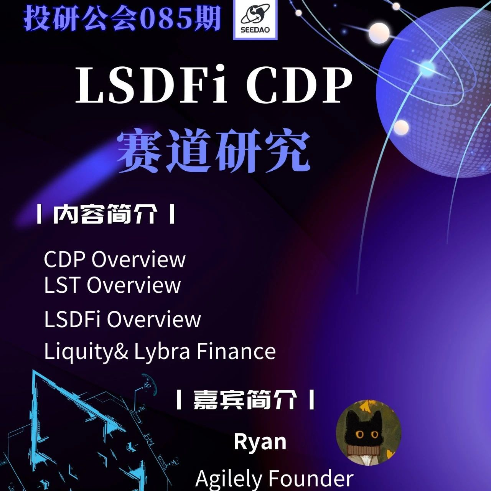

SeeDAO | 稳定币赛道分享
作者: 投研公会 Ryan
分类:
SeeDAO, 稳定币, 区块链, SeeDAO投研
来自Agilely founder的Ryan给大家做了基于LSD的稳定币项目分享（Lybra, Prisma, Grasvita, Raft, Agilely)

投研公会11月1日，来自Agilely founder的Ryan给大家做了稳定币的分享，具体如下：
CDP稳定币
稳定币作为加密世界目前最为成功的一个应用，在国际汇款和跨国清算中广泛运用。稳定币中主要分为中心化和去中心化稳定币，中心化稳定币使用基于储备的模型，主要依托于线下实体，对物理世界存在风险敞口（硅谷银行暴雷导致USDC脱锚）；去中心化稳定币主要使用Liquity改进的CDP模型。CDP(Collateral Debt Position,债务抵押头寸)模型最早由MakerDAO提出，用户在协议中质押蓝筹资产如ETH来铸造没有波动性、价值锚定一美金的稳定币。在Liquity将相关机制进行优化后，CDP可以说是作为铸造去中心化稳定币的基准模型。LSDFi
在以太坊网络转入POS公式后，有大量wrapped ETH作为承载着以太坊网络POS增发的4%左右无风险收益作为债券在市场上流通，这些债券统称为LST(Liquid Staking Token)。LST根据收益形式可以分为rebase LST和non-rebase LST，前者收益形式体现在数量的增加，后者体现在单价的增加。在这些LST承载的无风险利率之上构建的衍生品被称为LSD(Liquid Staking Derivatives)。将这些LST作为抵押品在CDP模型下铸造稳定币就能够生成一个价格稳定同时带有以太坊质押收益的产品，可以进行杠杆操作，抵押以太，获得stETH。再去抵押stETH，获得稳定币。稳定币又可以购买ETH，再去抵押。类似循环贷。来将POS收益和项目方治理token的杠杆拉到最大，该策略有较大的资金容量以及相对较低的杠杆，适合牛市中大资金做收益，上限高。上个牛市中2021年6月Liquity V1发布，带来去中心化稳定币的最优模型，Hard Peg与Soft Peg双重稳定模式，稳定池-仓位再分配-恢复模式三重清算让Liquity的稳定币LUSD安全度过了各种暴跌。但为了绝对的去中心化，LUSD只接受ETH作为抵押品，并将合约参数写死，削弱了LUSD的可拓展性，交由后续Liquity Fork们解决。Lybra：赛道龙头但美中不足
以太坊上海升级后，LSDFi概念开始兴起，2023年五月Lybra作为第一个将LST利率带到稳定币上的生息稳定币，在推出后迅速吸引了大量的市场关注，TVL高点接近$400m。但同时面临着诸多问题，包括吸引资金需要的高协议代币LBR排放，eUSD使用rebaseLST铸造以及持续买盘带来的向上脱锚。增设peUSD在DeFi场景使用
全链
- 使用es代币模型和dLP，减缓抛压，但是代币对协议赋能不够，并整体对于用户来说比较混乱。没有看到有明显的飞轮
Crvusd：基于Curve流动性进行创新
crvusd由Curve提出LLAMMA模型所支撑，主要在清算部分做出创新。在一般稳定币产品中，如果市场波动导致抵押品价格下跌，发生清算则会清算掉所有的抵押品在市场上卖出，如果规模较大卖出的清算抵押品会再次导致抵押品价格下跌，因此死亡螺旋。Curve结合自身AMM巨量的流动性优势，将清算过程结合进AMM，来实现“软清算”。即当价格下跌时一点一点卖出，来最小的帮助清算人避免损失。抵押品层面接收LST并提供高达九倍杠杆。crvusd在推出后TVL一路增长，目前TVL已经突破了120m。Raft：产品端创新最强，代币经济学欠缺
- 在Stability Pool中能够为用户提供10%固定APR，大概率可持续
但是在代币侧Raft设计较为潦草，采用ve模型，但是没有明显飞轮设计，并匆忙上所没有做好市值管理导致代币价格下跌严重，社区争议较多。Prisma：Curve生态嫡系扶持，产品常规
Prisma上线之初就得到了Curve系资本的扶持，Curve, Convex都对其大开绿灯，Frax更是在其上线之初就签署代币互换协议进行支持。其同样在代币侧也继承了Curve的ve模型，相较于Raft做的更完整，对协议内所有池上的$PRISMA排放都进行分配，在Convex上推出cvxPRISMA作为vePRISMA的退出流动性。但在产品侧较为常规没有创新，并且不继承LST的生息属性，清算不对外开放，协议的参与者以大户为主。Preon：激励形式创新，但产品无收益
Preon产品STAR并不继承LST的生息属性，并不属于LSDfi赛道。在产品模块上增设PSM，用户存入LUSD铸造STAR来提高STAR的借贷容量；集成了更加完善的贿选系统，并且使用期权代币作为排放来减少协议代币的实际抛压；与Arbitrum上ve(3,3) Dex Chronos合作，形成共振来提高TVL。
Gravita：创新性和可持续性不足，代币设计未知
Gravita产品层面并无太大的创新性，主要的增长来自于大量的流动性激励和积分空投活动，但目前的流动性是建立在Graviata使用所有协议费用收入作为激励的情况下建立的；目前积分空投与代币分发相关，但是更多的细节还未披露。如果积分空投和代币设计不能够有效的支撑起激励消失后的流动性，那么Gravita的前途叵测。Agilely官网 https://agilely.io/
在产品侧，Agilely相对于其他家在各个方面都打磨的更加完善，创新性更强，列举如下：• 同样采用了LayerZero的OFT技术，让稳定币USDA可以在不同的链之间互通，并且USDA多链为统一的token地址；• USDA会继承LST的生息属性，但是与Lybra持续买盘导致向上脱锚不同，通过ABI(Agilely Benchmark Interest)的设计来发放收益，用户自行领取USDA收益；• 在额外产品模块上，设置了存入DAI的PSM，让用户除了以太坊POS增发收益外，也能捕获到来自sDAI的RWA收益；• 费率层面，设置ADI(Agilely Dynamic Interest)来动态调整协议内的借贷利率，从而调控市场中的USDA总量，间接保持稳定• 清算层面，将一般Stability Pool改进为Smart Stability Pool，隔离不同抵押品的风险；并且将Liquidation放在前端，降低清算门槛，给用户提供套利和赚取gas补偿的机会；• 治理token层面，将会真正捕获到协议内产生的价值，让社区分享到协议的成长。